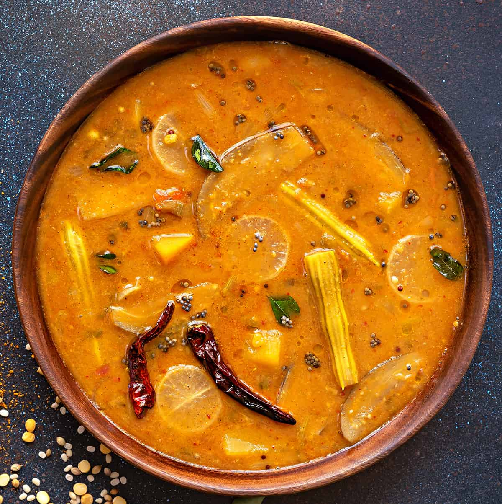
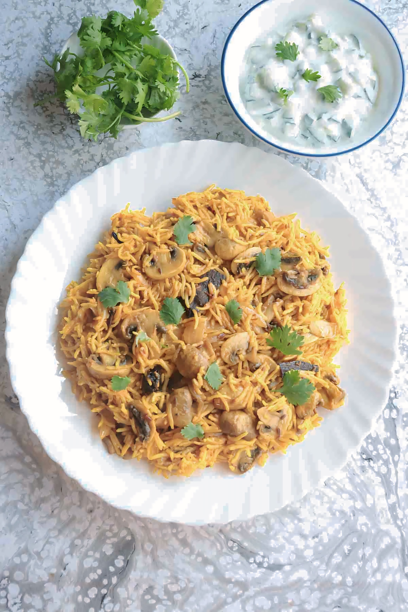

CUTLET
A vegetable cutlet is a popular Indian snack or appetizer made from a mixture of mashed vegetables, herbs, and spices, shaped into patties or balls, and then coated in breadcrumbs before frying. It's crispy on the outside and soft and flavorful on the inside
BABYCORN 65
Babycorn 65 is a popular South Indian appetizer that features crispy baby corn coated in a flavorful, spicy marinade.

VEGLOLLIPOP
Indian Veg Lollipop is a popular vegetarian starter, inspired by the famous chicken lollipop but made with vegetables and Indian spices.
It’s a crunchy, flavorful dish, usually served with spicy sauces like schezwan or green chutney.
IDLI
Idli is a traditional South Indian breakfast dish, made by steaming a
fermented batter of rice and urad dal (black gram). It's soft, fluffy, and highly nutritious, typically served with coconut chutney, sambar.

SAMBAR
Sambar is a flavorful South Indian lentil stew made with vegetables, tamarind, and a special blend of spices.
It’s a versatile dish that pairs beautifully with idli, dosa, rice, or vada.
CHUTNEY 4TYPE
COCANET CHUTENY
A quintessential South Indian side dish, Thengai Chutney is simple, flavorful, and pairs wonderfully with idli, dosa, pongal, or vada.
CORINDAR CHUTENY
Kothamalli (coriander) chutney is a vibrant, tangy, and flavorful accompaniment to South Indian dishes like idli, dosa, or even rice.
SPICY TOMATO CHUTENY
Kara Chutney is a fiery, tangy South Indian chutney, made with tomatoes, onions, and chilies. It's the perfect side for idli, dosa.
DOSA
Dosa is a popular South Indian thin, crispy pancake made from a fermented batter of rice and urad dal. It's typically served with coconut chutney, sambar, or other accompaniments
.

MUSHROOM BIRIYANI WITH ONION RAITA
A delightful fusion of flavors, Mushroom Biryani with Onion Chana is a hearty and aromatic rice dish featuring juicy mushrooms cooked with basmati rice and fragrant spices, accompanied by spicy chickpeas (onion chana) as a side.
PAROTTA WITH SALNA
Porotta (also known as parotta) is a popular Indian flatbread made from maida (all-purpose flour), which is flaky and layered when cooked. Salna is a spicy, flavorful, and gravy-like accompaniment made with vegetables, lentils, and spices. It’s a classic combo enjoyed in South Indian and Sri Lankan cuisine.

KAMBUCURD RICE
Kambu Curd Rice is a refreshing South Indian dish that combines nutritious pearl millet with creamy yogurt and is often flavored with mild spices. It’s perfect for a light and satisfying meal, especially on a hot day.

NAAN
Naan is a classic Indian flatbread that’s soft, slightly chewy, and perfect for mopping up flavorful curries, stews, and gravies. It’s traditionally baked in a tandoor (clay oven), but you can make it easily at home on a stovetop.

PANEER BUTTER MASALA
Paneer Butter Masala is a rich and creamy North Indian dish made with paneer (Indian cottage cheese) cooked in a flavorful tomato-based gravy. It’s a favorite at Indian restaurants and is perfect for special occasions or family gatherings.
APPAM WITH THENGAIPAAL
Appam is a soft, fluffy, and slightly tangy South Indian rice pancake, while Thenga Pall is a rich and creamy coconut milk curry. Together, they make a delicious and comforting meal.

KOTHU PORATTA
Kothu Porotta is a popular Sri Lankan and South Indian street food dish made with chopped porotta (layered flatbread) stir-fried with vegetables, meat, eggs, and aromatic spices. It’s spicy, savory, and full of flavor.

POORI WITH CHANNAMASALA
Poori are deep-fried Indian bread that are fluffy, golden-brown, and perfect for soaking up delicious gravies like Chana Masala. Chana Masala is a spiced chickpea curry cooked in a tangy tomato-based gravy with aromatic spices. Together, they make a classic North Indian meal.

WHITE RICE
White Rice is a staple in many cuisines around the world. It is versatile, easy to prepare, and can complement a wide variety of dishes. Here’s a simple and foolproof way to cook white rice.

RASAM
Rasam is a popular South Indian soup-like dish made from tamarind, tomatoes, and a blend of spices. It’s tangy, spicy, and aromatic, perfect for warming up your meal.